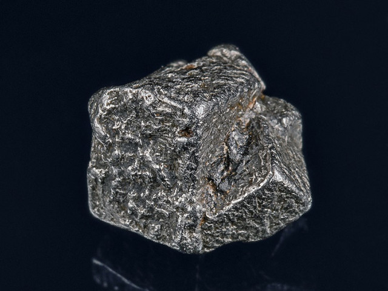
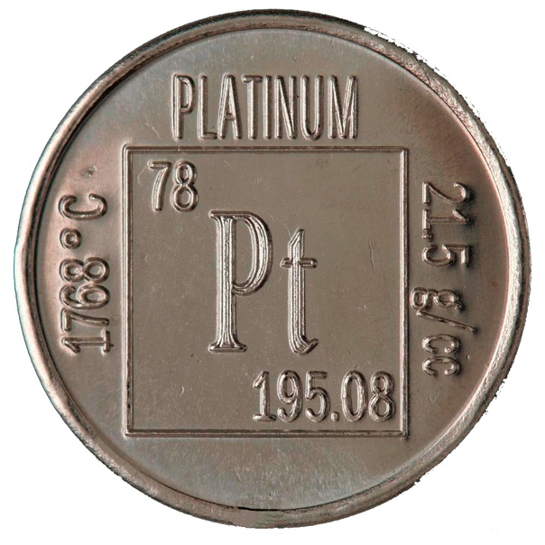

Платина
Пла́тина (химический символ — Pt от лат. Platinum) — химический элемент 10-й группы (по устаревшей классификации — побочной подгруппы восьмой группы, VIIIB), шестого периода периодической системы химических элементов Д. И. Менделеева, с атомным номером 78.Простое вещество платина — блестящий и очень тяжёлый благородный металл серебристо-белого цвета.

Самородная платина использовалась для изготовления ремесленных изделий в Древнем Египте, Эфиопии, Южной Америке. В 16–17 вв. испанские колонизаторы добывали попутно с золотом тяжёлый белый металл, которому дали название «платина» (от исп. platina, уменьшительное от plata – серебро). Описание «платины» как огнестойкого металла впервые сделано Ю. Ц. Скалигером в 1557 г. Открытие платины часто приписывают испанскому исследователю А. де Ульоа, который в 1745 г. привёз в Европу с золотых рудников Южной Америки образцы самородной платины (независимо от него британский металлург Ч. Вуд прислал в 1741 г. аналогичные образцы с Ямайки). Самостоятельным металлом платина, которую первоначально считали белым золотом, признана в середине 18 в., после публикации в 1748 г. отчёта А. де Ульоа. В чистом виде металл впервые выделен У. Волластоном в 1803–1804 гг.Название платине было дано испанскими конкистадорами, которые в середине XVI в. впервые познакомились в Южной Америке (на территории современной Колумбии) с новым металлом, внешне похожим на серебро (исп. plata). Слово буквально означает «маленькое серебро», «серебришко». Объясняется такое пренебрежительное название исключительной тугоплавкостью платины, которая не поддавалась переплавке, долгое время не находила применения и ценилась вдвое ниже, чем серебро. В настоящее время её стоимость относительно серебра выше примерно в 42 раза.
Платина относится к редким элементам; концентрация в земной коре 5·10–7 % по массе. Встречается в виде самородков, сплавов с железом (поликсен), палладием или иридием и соединений с мышьяком или серой, а также в составе сульфидных полиметаллических руд.

Платина относится к редким элементам; концентрация в земной коре 5·10–7 % по массе. Встречается в виде самородков, сплавов с железом (поликсен), палладием или иридием и соединений с мышьяком или серой, а также в составе сульфидных полиметаллических руд.Основные области применения платины, её соединений и платиновых сплавов – автомобилестроение (сплав Pt с Pd – катализатор дожигания выхлопных газов автомобилей), электротехника и электроника (сплавы платины – материалы контактов электрических приборов и печей сопротивления), нефтехимический и органический синтез (платина – катализатор гидрирования, изомеризации, циклизации, восстановления и других реакций органических соединений; катализатор синтеза HNO3, H2SO4; катализатор очистки Н2), стекольная промышленность (материал тиглей для варки стекла, фильер для производства стекловолокна), измерительная техника (материал для термопар и термометров сопротивления). Платину используют также для производства лабораторной посуды (ампулы, тигли, чаши, лодочки, сетки), в качестве анодов промышленных и лабораторных электролизёров, сплавы платины – для изготовления хирургических инструментов и постоянных магнитов (сплав с Со). В виде наночастиц платину применяют как электрокатализатор в топливных элементах.